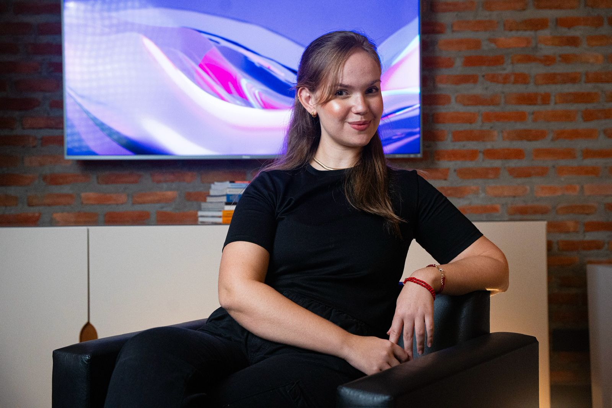

Senior Product Manager, specialized in AI and B2B products. I'm currently the sole PM at Tempo, owning the product end-to-end — from discovery to design, from PRD to launch — for a team of 12 engineers and 30 ops staff.

Four principles that show up in almost everything I build.
When a feature moved no metric worth prioritizing with the devs, but the ops team suffered with it daily, I built the solution myself from scratch — and debugged it too.
I led Qulture.Rocks' first churn study — not because anyone asked, but because the 2024 strategy needed a real foundation, not a guess.
I've been PM, designer, and product marketing at the same company, in the same quarter. I'd rather learn fast than wait for someone to draw the right box for me.
I own the product solo for a team of 12 engineers and 30 ops staff. That only works because I write clear PRDs, communicate decisions before anyone has to ask, and know when to hold a priority firm. Without that, it falls apart fast.
Each journey has its own context, but the same thread runs through all of them: understanding the real problem before building anything.
A low-impact item on the roadmap, but a high operational drain — rebuilt from scratch, without waiting on an engineering queue.
An outdated notification screen became an operations hub — eliminating error-investigation requests to engineering and returning that time to product development.
Understanding why clients saw no value outside the annual review — and the growth hypothesis that came out of it.
With a strategic eye for product and discovery, she combines technical knowledge with exceptional communication, energizing the team and creating a light, collaborative, motivating environment.
Carol is an amazing PM! She was key for us to build a continuous customer feedback process, and supported 3 squads with business and customer analysis — super organized, proactive and customer centric.
Caroline is one of those professionals who make a difference from day one — with a relentless drive to learn and genuine curiosity about the world of Product.
Carol always sought to learn more about engineering, which makes her a well-rounded PM — she understood product motivations as well as engineering constraints.
I had the privilege of being mentored by her early in my Product career, and I learned a lot — about product, about leadership, and about navigating different contexts with confidence.
Carol's sense of urgency, backlog prioritization, and long-term vision surprised me — not just her availability, but the real positive impact generated for the company.
Sole PM at Tempo, owning the product end-to-end for an AI platform that orchestrates payments, tasks, and scheduling via WhatsApp assistants for 400 B2C clients, with 12 engineers and 30 ops staff.
Led a 13-person squad at a sales CRM — design, engineering, QA, and support.
Brought generative AI into performance reviews right at the start of the ChatGPT boom — one of the projects I'm proudest of building.
Where it all started: economics, data, and the analytical foundation I still carry today.
Between 2021 and 2023 I was a digital nomad across Brazil — Maranhão, Piauí, Ceará, Paraná, Rio Grande do Sul, Santa Catarina, Rio de Janeiro, and most of São Paulo. I think it's the same part of me that likes stepping into a product with no trail already cut: moving cities every few months is also deciding without a map. These days I train to compete in open-water swimming — no lane, no wall to hold onto, just discipline and the decision to keep going. And I'm always in the middle of some novel; I can't resist systems and worlds too complex to put down, whether in a book or a product.
I like talking through product, ambiguity, and teams that build without waiting for the path to be laid out. If that's your thing too, let's talk.
Email: carolinefg63@gmail.com